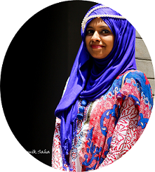

Hi! Welcome to Faria's homepage :)
CV | Github | Google Scholar | X/Twitter | LinkedIn | Medium | Youtube
I am a PhD student at CMU School of Computer Science, HCII Department, working with Prof. Jeff Bigham. I am broadly interested in Personalized AI agents.
My research direction is two-fold:
1) Aligning LLM with Abstract and high-level natural language command (Current project: Copilot Web Agent, Past project: NoTeeline, IUI '25')
2) Resolving Data bottleneck using LLM as a synthesizer (Past project: ScreenLineAgent (Google), DreamStruct, ECCV '24)

